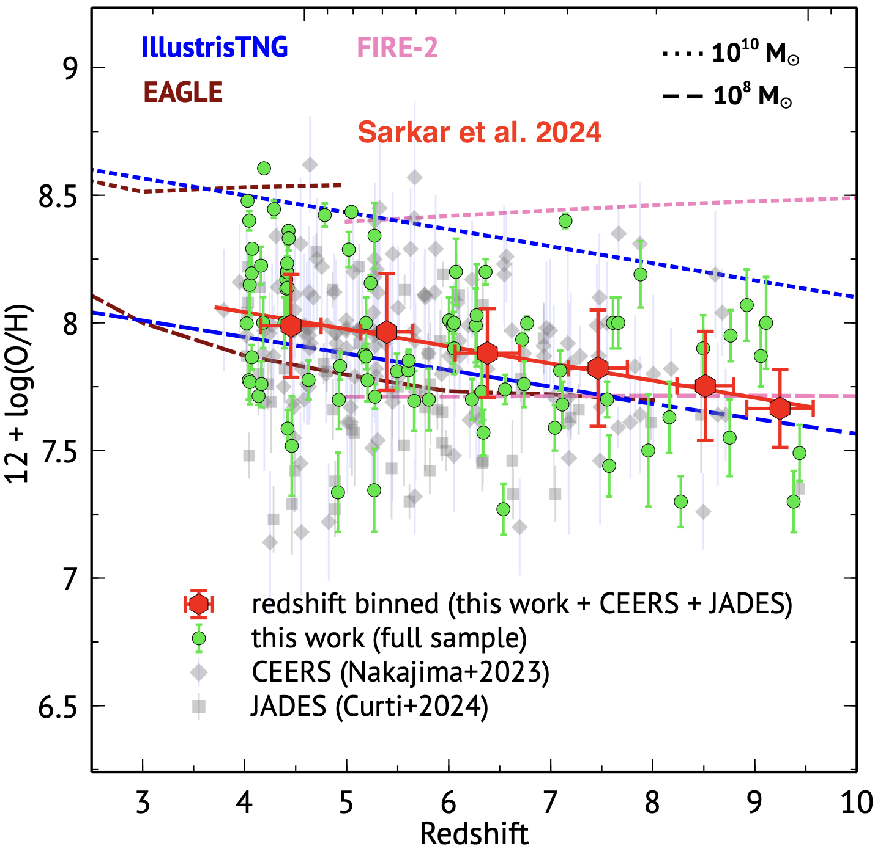

How galaxies grow and evolve over cosmic time?
Early galaxies, formed just a few hundred million years after the Big Bang, are the universe's foundational building blocks. Bursting with intense star formation, these galaxies offer a rare glimpse into the cosmos' infancy. Studying early galaxies helps us understand how the first stars, black holes, and cosmic structures emerged from the primordial universe, ultimately shaping the universe as we see today. By unraveling their mysteries, we can trace the evolution of galaxies over billions of years and uncover the origins of elements and conditions essential for life. Observing their ancient light brings us closer to understanding the very dawn of our cosmic story.
Fig 1: Redshift evolution of gas-phase metallicity for 263 galaxies from the CEERS and JADES JWST surveys (Sarkar et al. 2024), showing a clear decline in metallicity with increasing redshift.The central focus of my research is to get a clear picture of how and when the elements essential for cosmic structures and life first formed and dispersed across the Universe. For the first time, the James Webb Space Telescope is allowing us to peer into the era when galaxies were just beginning to take shape. With its exceptional capabilities, JWST is delivering an unparalleled treasure trove of early galaxies, leading to transformative discoveries about our cosmic origins. In a recent study (Sarkar et al. 2024), we investigated 81 early galaxies in the redshift range 4 < z < 10. Our findings reveal a remarkable and previously unseen decline in gas-phase oxygen abundances as we journey back in time toward the Universe’s infancy. The driving force behind this trend remains largely unknown, sparking further exploration into the processes that shaped the early cosmos.
Fig 2: Artistic impression of gas inflow and outflow in a galaxy. Credit: Tsinghua UniversityHydrodynamical simulations, such as IllustrisTNG, reveal that early galaxies contain significantly more interstellar gas than stellar mass, reflecting their nascent stages of formation. This increased amount of interstellar gas, fueled by pristine gas inflows, may act as a cosmic mixer, diluting the metal-enriched gas within the interstellar medium (ISM) and reducing the overall metallicity.